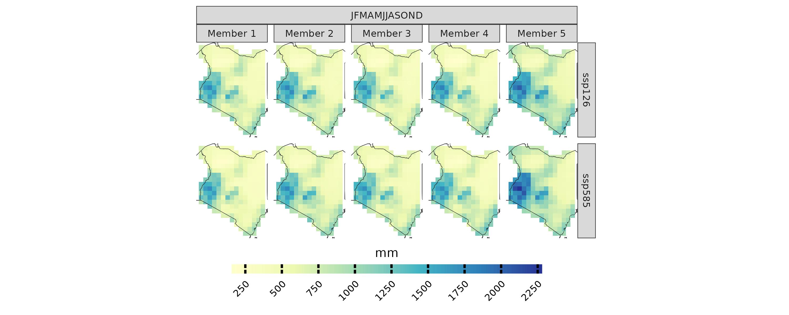

Analysis of CMIP6 Models using CAVAanalytics
own_data.RmdIntroduction
CAVAanalytics is a versatile framework designed for the analysis and visualization of gridded climate data. This document will guide you through the process of handling CMIP6 model outputs, which have been downscaled and bias-corrected using the ISIMIP methodology. The models are accessible via ISIMIP’s official portal.
Downloading CMIP6-ISIMIP climate datasets
To facilitate the download of the necessary climate datasets, we have prepared a convenient bash script. This script and its usage are documented in our GitHub repository. Below is an example of how to execute the script:
This script will download historical data and future scenarios (ssp126 and ssp585) for five GCMs, and it will automatically generate ncml files to merge individual NetCDF files.
Note: Windows users can enable the Windows Subsystem for Linux (WSL) to run bash scripts natively.
Processing the CMIP6-ISIMIP climate datasets with CAVAanalytics
Once the data is downloaded, it can be loaded into CAVAanalytics as shown below:
isimip_data= load_data(path.to.data = "/home/riccardo/Downloads/isimip_kenya/ncml/", country = "Kenya", variable = "pr",
years.hist = 1980:2000, years.proj =2030:2050, path.to.obs = "W5E5")Note: Precipitation data should be converted from kg/m²/s to mm/day by multiplying by 86400.
isimip_data[[1]]= isimip_data[[1]] %>%
dplyr::mutate(models_mbrs=purrr::map(models_mbrs, ~ transformeR::gridArithmetics(.x, 86400, operator = "*")))The following code snippet visualizes the mean cumulative precipitation for the CMIP6 models
projections(isimip_data, season = list(1:12)) %>%
plotting(try, plot_titles = "mm", ensemble = F, palette = IPCC_palette(type = "pr", divergent = F))
CORDEX-CORE vs. CMIP6 Model Outputs
This section presents a quick comparison between the climate change signals in mean total annual precipitation projected by the CMIP6 and CORDEX-CORE ensembles for Kenya (for demonstration purposes only).
cordex_data <- load_data(path.to.data = "CORDEX-CORE", country = "Kenya", variable = "pr",
years.proj = 2030:2050, years.hist = 1980:2000, domain = "AFR-22", path.to.obs = "W5E5")The following figures provide a comparative visualization of the projected changes
a=climate_change_signal(cordex_data , season = list(1:12), percentage = T) %>%
plotting(., palette = IPCC_palette(type = "pr",divergent = T), plot_titles = "%", legend_range = c(-50,50))+
ggplot2::ggtitle("CORDEX-CORE")
a.tr=climate_change_signal(cordex_data , season = list(1:12), percentage = T) %>%
plotting(., plot_titles = "%", palette = c("blue", "red"),temporal = T, legend_range = c(-110,110))+
ggplot2::geom_hline(yintercept = 0,
linetype = "dashed",
color = "black")
b=climate_change_signal(isimip_data, season = list(1:12), percentage = T) %>%
plotting(., palette = IPCC_palette(type = "pr",divergent = T), plot_titles = "%", legend_range = c(-50,50))+
ggplot2::ggtitle("CMIP6")
b.tr=climate_change_signal(isimip_data , season = list(1:12), percentage = T) %>%
plotting(., plot_titles = "%",palette = c("blue", "red"), temporal = T, legend_range = c(-110,110))+
ggplot2::geom_hline(yintercept = 0,
linetype = "dashed",
color = "black")
combined=a+b+plot_layout(guides = "collect")
combined/(a.tr+b.tr)+ plot_layout(heights = c(2, 1))
Initial analysis indicates a significant discrepancy in the climate change signal for precipitation between the two data sets. The CMIP6-ISIMIP ensemble shows a positive climate change signal for precipitation compared to the CORDEX-CORE ensemble.
CORDEX-CORE Models: These models potentially provide better resolution of large-scale phenomena impacts and spatial variability.
ISIMIP CMIP6 Data: This dataset is not dynamically downscaled, possibly leading to less precise representation of local spatial precipitation patterns compared to CORDEX-CORE under these circumstances.